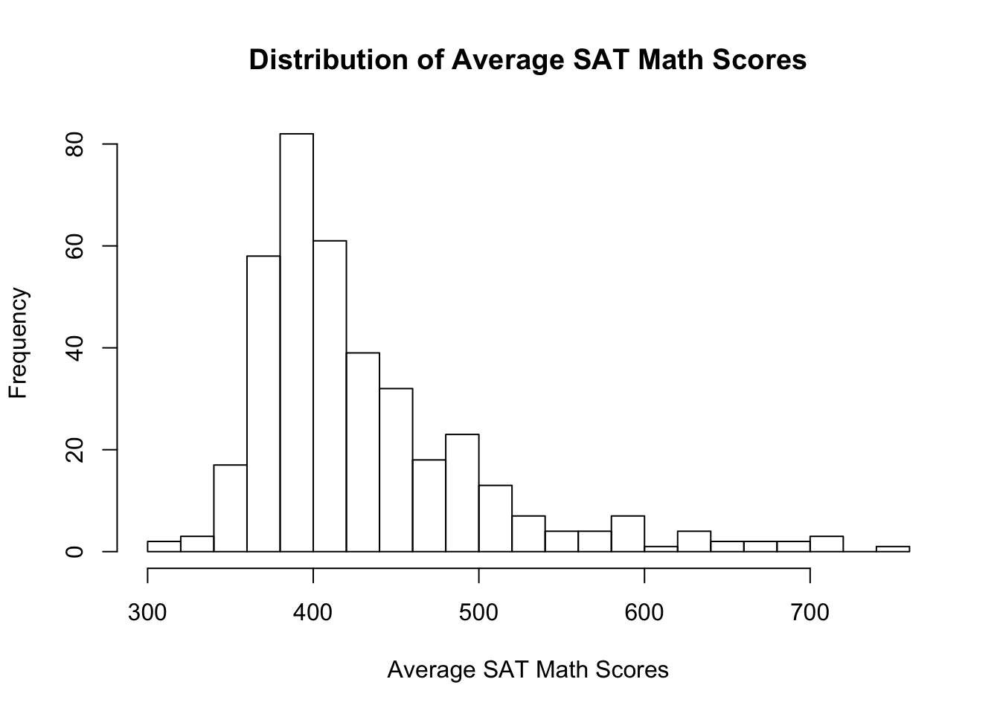
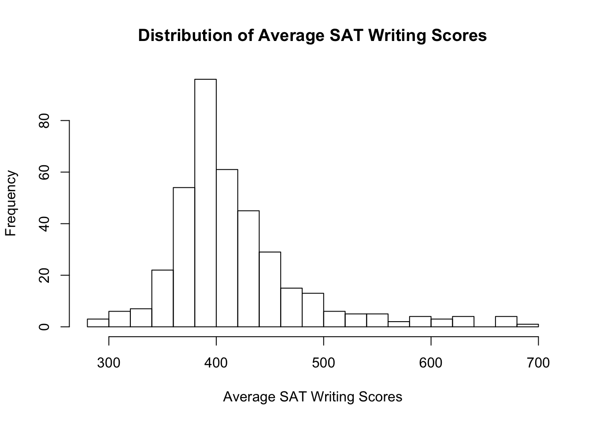
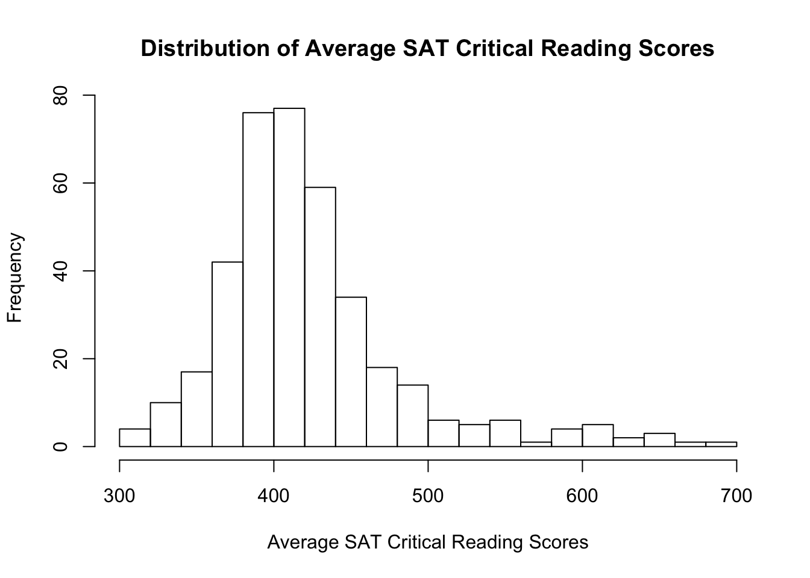

The data used in this project is from “2014-2015 School Quality Reports Results for High Schools (NYC)”. This data set is the result of Quality Review, a process that evaluates how well schools are organized to support student learning and teacher practice in New York State.
summary(educat)## School Name Average Score SAT Math Average Score SAT Writing
## Length:385 Min. :317.0 Min. :284.0
## Class :character 1st Qu.:384.0 1st Qu.:381.0
## Mode :character Median :411.0 Median :402.0
## Mean :431.4 Mean :417.3
## 3rd Qu.:455.0 3rd Qu.:435.0
## Max. :754.0 Max. :693.0
## Average Score SAT Critical Reading Economic Need Index
## Min. :302.0 Min. :0.2040
## 1st Qu.:386.0 1st Qu.:0.5800
## Median :411.0 Median :0.7030
## Mean :423.4 Mean :0.6603
## 3rd Qu.:442.0 3rd Qu.:0.7750
## Max. :697.0 Max. :0.8820
## Percent in Temp Housing - 4yr Supportive Environment - Percent Positive
## Min. :0.00300 Min. :0.6600
## 1st Qu.:0.05600 1st Qu.:0.7900
## Median :0.08500 Median :0.8300
## Mean :0.09707 Mean :0.8273
## 3rd Qu.:0.13000 3rd Qu.:0.8700
## Max. :0.38500 Max. :1.0000
## Percent of teachers with 3 or more years of experience
## Min. :0.1670
## 1st Qu.:0.6670
## Median :0.7740
## Mean :0.7455
## 3rd Qu.:0.8570
## Max. :1.0000
## Rigorous Instruction - Percent Positive
## Min. :0.7000
## 1st Qu.:0.8200
## Median :0.8500
## Mean :0.8533
## 3rd Qu.:0.8900
## Max. :0.9700
## Collaborative Teachers - Percent Positive
## Min. :0.5700
## 1st Qu.:0.8100
## Median :0.8700
## Mean :0.8593
## 3rd Qu.:0.9200
## Max. :0.9900hist(educat$`Average Score SAT Math`, main = "Distribution of Average SAT Math Scores", xlab ="Average SAT Math Scores",nclass = 16)
hist(educat$`Average Score SAT Writing`, main = "Distribution of Average SAT Writing Scores", xlab = "Average SAT Writing Scores",nclass = 15)
hist(educat$`Average Score SAT Critical Reading`, main = "Distribution of Average SAT Critical Reading Scores", xlab = "Average SAT Critical Reading Scores",nclass = 15)